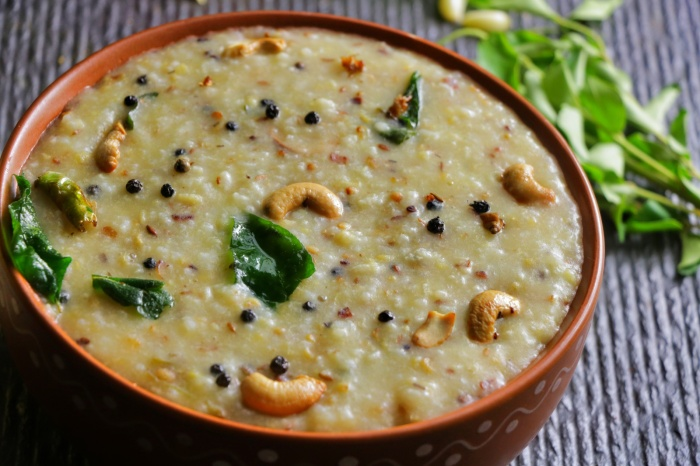

Pongali

A quick healthy delicious South Indian breakfast
Are you a working professional looking for a quick easy and delicious breakfast to
kick start the day while not compromising on the nutritional intake?
This South Indian breakfast is right for you. This can be consumed by people of all age groups
starting from 6 months baby to 90 year old grandpa. This can keep the diabetes in check too.
Lets get started!
-
Ingredients
- Foxtail Millet - 1 cup
- Greengram - 1/2 cup
- Water - 6 cups
- Ghee - 1 Tablespoon
- Black Pepper - 1 Teaspoon
- Curry Leaves (optional)
- Cashewes (optional)
- Salt - as needed
-
Steps
- Dry roast 1/2 cup of greengram until it start to release fragrance.
- Wash the roasted greengram and 1 cup of foxtail millet until they are clean
- Add 6 cups of water, salt and washed grains into a pressure cooker and cook it in medium flame for 15 min
- Take another pan, add 1 tablespoon of ghee and heat it
- Add 1 teaspoon of crushed black pepper, few curry leaves(optional) and cashewes(optional)
- Add this mixture to the cooked millet and greengram
- Healthy and tasty pongali is ready